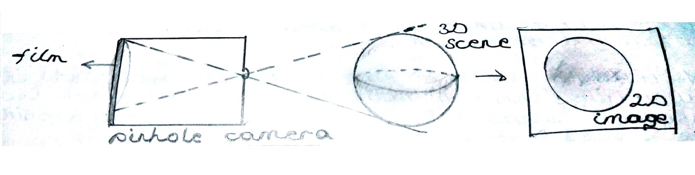
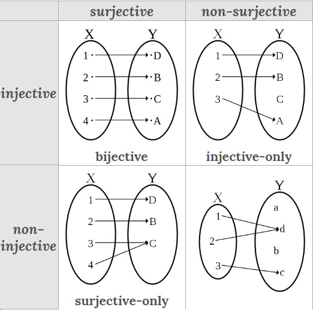
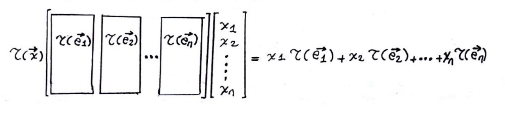
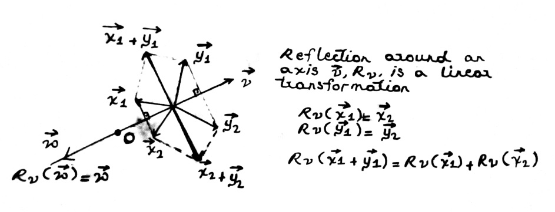
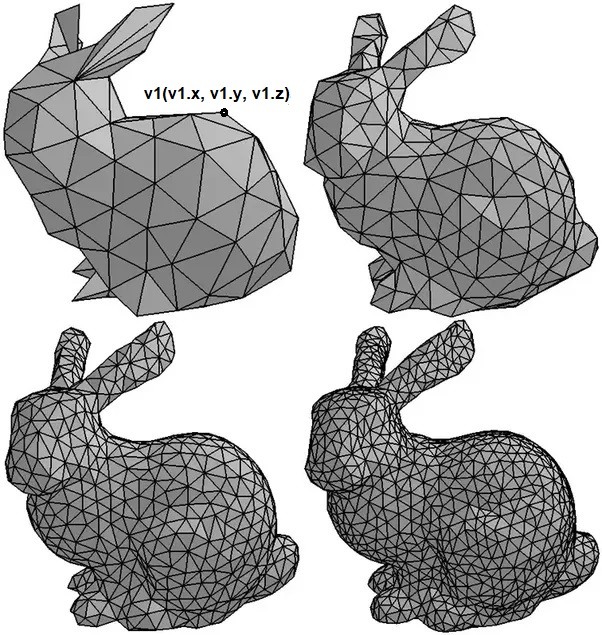
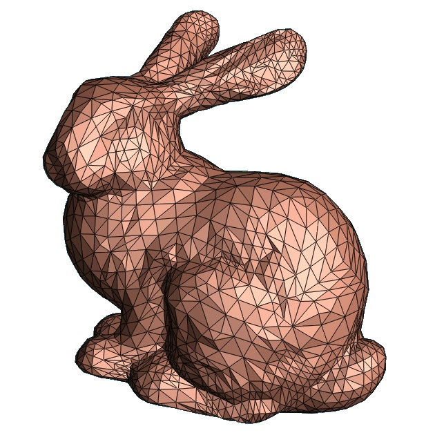
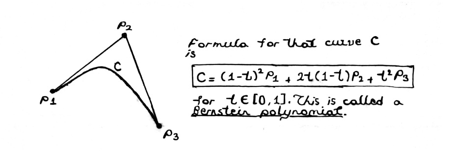

Notes for Computer Graphics
Table of Contents
- 1. Introduction
- 2. Some Geometry for Computer Graphics
- 3. OpenGL Graphics Pipeline
- 4. A Sample OpenGL Program
- 5. OpenGL Data, aka Models
- 6. OpenGL Algorithms, aka Shaders
- 7. Project | Deferred Rendering
- 8. A Bag of Advanced Rendering Techniques
- 9. Rendering Equation
- 10. Ray Tracing I
- 11. Ray Tracing II
- 12. Ray Tracing III
\blankpage
1 Introduction
In computer graphics, we describe a scene's geometry at a mathematically precise level and apply algorithms to create digital images of this scene. To specify scene geometry, we use vectors, points etc. To move these objects around, we use geometric transformations. We may transform the objects in linear or nonlinear ways but all of them will be discretized so that we can approximate them on computers. This will bring us to matrices. So, in short, we'll be talking about linear algebra. Fundamental thing we do in CG, short for computer graphics, is called digital image synthesis. Imagine an artist looking into a scene or conjuring up one in her mind, and painting what she sees onto a canvas. She needs to consider a lot of things; geometric properties of the objects around, how light comes into the scene, perspectives etc. Keep in mind that nature does this all the time: our eyes have retinas that nature uses as a canvas. Artists simulate this process. Here is the idea behind digital image synthesis:
Nature's language is math so there must be a mathematical formulation of this cast-onto-retina process. If we can fşnd this formulation, we can use our computers to do the same. Note that artists do not exactly simulate the nature. They add in endless creativity to impress and/or express. But, the more realistic they want their images to look, the more they need to simulate the nature.

Figure 1: Analog image synthesis with cameras
Remember that we actually have an analog way of synthesizing images, analog cameras! In the figure, you can see the simplest pinhole camera model where the light coming from the scene is directed to the film where it exposes a projection of the scene onto the film. This process may guide us in our computational tasks as well. So in broad terms, we do
- Describe the scene geometry in mathematical precision
- Project it to the 2D canvas
- Describe the light interaction in mathematical precision
- Compute the color of each point on the canvas
1 and 2 is termed vertex processing, 3 and 4 is termed lighting & shading. There are many ways to achieve these tasks but mathematical and computational ideas are general enough. We'll focus on general ideas but we'll also try to show an implementation on the computer so that we can see how all of these are realized. We are going to use OpenGL for implementations.
A system that brings together different vertex processing, lighting, shading etc. mechanisms into a coherent whole to implement a digital imaging system is called a graphics pipeline. We are going to work with programmable graphics pipeline offered by OpenGL.
This is called pipeline because vertex processing, lighting, shading etc. are implemented in stages that follow each other on real GPUs. This is due to performance reasons. You can process each point in the geometry seperately and they can follow the same processing stages independent of each other. This is a version of SIMD parallelism, Single Instruction Multiple Data. All this we'll be clear once you get comfortable with programming these modern GPUs.
We are going to start now, hoping that the big picture is beginning to form in your mind. As you study, of course, things will get more and more clear. To be safe, we assume readers had Calculus I, II, III sequence at least. Advanced Calculus lectures by Theodore Shifrin are available on Youtube and they are more than enough. In fact, they are amazing. So, let's continue.
Precise study of space, in fact spacetime, is the subject of geometry. For us, in CG, we try to master the geometry of Euclidean space, \(R^n\), or \(R^3\) most of the time. To this end, we dissect underlying structure of \(R^n\). For example, its rich behaviour under continuous functions is due to its topological nature. \(R^n\) might show a completely different behaviour due to its linear structure. As we said, in CG, we are fundamentally concerned with this linear structure. Linearity might be the most basic thing we can observe in the space around us and mathematical study of linearity is about vector space structure of \(R^n\).
As building blocks of linear geometry, we'll study linear subspaces. There is nothing more to say about 0-dimensional linear subspace, origin point.
Line through origin
Suppose \(\mathbf{V}\) is a vector space over the field \(\mathbf{F}\) and \(\vec{v} \in \mathbf{V}\). A line L through origin is a set of vectors such that
\[ L = \{\vec{x} \in \mathbf{V}: \vec{x} = t \vec{v}, t \in \mathbf{F}\} \]

Figure 2: Linear and affine subspaces
Take \(R^3\) to be our vector space and \(R\) to be our field. Notice that L on (I), at the above figure, satisfies vector space axioms and it is contained in \(R^3\). It is a linear subspace of \(R^3\). On (II), L is again a linear subspace but A can't be since \(\vec{\emptyset} \notin \mathbf{A}\). We tend to think both of them as lines but only L, linear structures through origin, is a vector space. A is called an affine subspace [or a linear variety, linear manifold].
Affine Subspace
Pick an arbitrary \(\vec{w} \in R^n\), the set
\[\{ \vec{v} + \vec{w}: \vec{v} \in \mathbf{L} \}\]
where L is a linear subspace of \(R^n\) is called an affine subspace.
So A is like a translation of L. We'll talk about linear and affine geometry later.
Remember we said we require Advanced Calculus as a prerequisite. This way, you are accustomed to abstractions like above. If you are a beginner, you might not be able to see why we devise such abstractions. "Vector space and affine space? Both seems like a line to me!", you might think. But if you took Advanced Calculus, you know the level of clarity abstraction achieves for us.
Also important for us are the geometric transformations between these spaces because that will be how we move the objects around in our scene. To this end, let us remember the idea of a linear transformation. We use the terms mapping, transformation, function etc. interchangibly. For a function \(f: X \to Y\), we say \(X\) is its domain and \(Y\) is its range.

Figure 3: Mapping from space X to space Y
On the figure, you can see where \(X\) is mapped onto in \(Y\), shaded region. That shaded region is called the image of \(f\). If the image of a function is the same as its range, we call it an onto function or surjective. This can be shown as \(\forall y \in Y, \exists x \in X. f(x)=y\), so range is used up in a sense. We call a function one-to-one or injective if \(f(x_1) = f(x_2)\) implies \(x_1 = x_2\). This requires no two different elements in the domain is mapped to same element in the range. If a function is both surjective and injective, we call it bijective. You can check the figure below, from Wikipedia, to see the alternatives.

Figure 4: Type of functions
Linear Transformation
A mapping \(T: X \to Y\) is called a linear transformation if for all \(x_1, x_2 \in X\) and an arbitrary scalar \(c\), \(T\) satisfies
- \(T(x_1 + x_2) = T(x_1) + T(x_2)\)
- \(T(c x_1) = cT(x_1)\)
For us, working on \(R^n\), key thing will be representing these transformations as a matrix. We do this by observing that a linear transformation is completely determined by its effect on basis vectors. In \(R^n\), we can write each vector as
\[ \vec x = x_1\vec e_1 + x_2\vec e_2 + ... + x_n\vec e_n\]
and if we transform this by a linear transformation \(T: R^n \to R^m\), we get
\[ T(\vec{x}) = x_1T(\vec{e_1}) + x_2T(\vec{e_2}) + ... + x_nT(\vec{e_n}) \]
by definition of linearity. Now, \(x_1, x_2, ... x_n\) are coordinates and they are scalar. So if we write these coordinates as a column vector, we can get to the above affect as a matrix multiplication as shown on the below figure.

Figure 5: Linear transformations as matrices
\(T(\vec{e_1}), T(\vec{e_2})... T(\vec{e_n})\) will be elements of \(R^m\) since \(T\) maps from \(R^n\) to \(R^m\). This means we will have \(m\) elements in each column, giving us \(m\) rows. We will have \(n\) columns for each basis of \(R^n\). Thus a mapping from \(R^n\) to \(R^m\) will be represented by an \(mxn\) matrix. Now, let us talk about an example linear transformation, reflection.

Figure 6: Reflection as a linear transformation
The matrix we use for such a tranformation will be developed later. For now, just observe the linear nature of reflection. Also, take a notice of the part \(R_v(\vec w) = \vec w\). This should remind you of eigenvalues and eigenvectors.
Eigenvalues, Eigenvectors
For a linear transformation \(T\), if a vector \(\vec v\) and scalar \(\lambda\) satisfies \(T(\vec v) = \lambda \vec v\), we call \(\vec v\) an eigenvector and \(\lambda\) an eigenvalue.
This might seem arbitrary but believe me, disecting these are the most useful analysis you can perform on a linear transformation.We are interested in analyzing the eigenspace. Eigenvectors also form a vector space and this is called eigenspace. The basis of eigenspace of a linear transformation says so much about the transformation itself. In CG, we won't use them much at the beginning but any advanced study of CG requires their mastery.
Let's now take a look at this affine thing. I can tell you, as an example, that translation is an affine transformation. Trust me at the beginning and we will show that it is indeed not a linear transformation. Suppose translation is a linear transformation, denote it \(T\). Also say, \(X\) is a vector space. Being a linear transformation, \(T\) should map \(X\) to a vector space because linear maps preserve vector space structure, ie. homomorphism for vector spaces. Call the range of \(T\) as \(Y\). Again, if \(T\) is linear, \(Y\) must be a vector space.
Translation is not a linear transformation.
Suppose we are translating by a vector \(\vec w\). Thus we can say
\[Y = {X + \vec w}\] for all \(\vec x \in X\). If \(\vec w\) is not \(0\), in which case we would not be translating anyways, \(X\) and \(Y\) can't have any intersection. Suppose \(\vec k \in X, Y\). Then \(\vec k - \vec w \in X\). This means \(\vec k - ( \vec k - \vec w ) = \vec w \in X\). But if \(\vec w\) is contained in \(X\) we would not be translating because all point would still be remain in \(X\) after translation. Thus, again, \(X\) and \(Y\) can't have any intersection. Remember, \(\vec \emptyset \in X\). Thus \(Y\) can't contain the origin vector. This defies the vector space axioms. Thus, \(Y\) can't be a vector space. By contrapositive of if \(T\) is linear, \(Y\) is a vector space, we can say \(T\) is not linear.
Ok, it is not linear. But is it affine? What is an affine mapping? What kind of structure it preserves? Can we represent them as matrices as well? These questions will be answered in detail later. We, as you can guess, assume a maturity in linear algebra but affine spaces might be unheard of to many. We will develop them in detail. Let's, for now, accept that we will use transformations to move objects around and affine transformations preserve the flatness of a space. For example, if you apply an affine transformation to a triangle, it will still be a triangle in the new space because affine transformations preserve straightness, paralellness etc. of lines. Again, all of this will be clear later.
How we are going to use these mathematical models to realize imaging algorithms on a real computer, we should understand that as well. We are trying to visualize surfaces of the objects in a scene but in a real world scene, there might be very complex shapes. Our strategy is to approximate these curved, rich surfaces by using many small flat, linear surfaces. The figure below may help you visualize this strategy.

Figure 7: A bunny is better and better approximated by more triangles patched together
Many triangles patched together in order to approximate a surface is called a mesh, in this case a triangle mesh because we can use other geometric objects to approximate a surface. You can see a point on the least-detailed mesh on the above figure, called v1. This is a vertex on the mesh. It is in 3D world and has coordinates \(x, y, z\). A triangle is made of three vertices and each triangle is called a face. In a graphics pipeline, we process these vertices and faces to our application's needs. Without putting them into a structure, same points may end up representing a different shape then bunny. This object we are trying to visualize is called our model and processing the data that belongs to a model is crucial for realistically and efficiently visualizing the model. All computations related to modeling is performed in a stage called vertex processing and in a real graphics pipeline, it might be implemented as many substages. For example, in vertex processing stage, we might interpolate the normals for each face, we might move the object far away from camera using matrices etc.
Output of vertex processing stage might be called a fragment, or pixel depending on used terminology. These are candidates to be visualized in the final image. Not all of them ends up on the image because we do some processing to eliminate unneeded ones. For example, one fragment might lie behind the other and may represent something that is not visible in the scene in the first place, due to being obscured by another object. These will be, of course, eliminated from the final digital image as well. For the ones remaining, we calculate the color of the fragment. This stage of the graphics pipeline is called ligthing and shading. This could, again, be implemented as many substages on a real graphics pipeline.
This is, of course, a crude way to look at graphics pipelines and we will give more detail as we go along. Still, the output image for the above bunny might look something like this.

Figure 8: A bunny after we performed shading and coloring
Meshes are not the only way to approximate arbitrary curves and surfaces. There are many methods in fact. Meshes are popular because modern GPUs can process them very efficiently but in an advanced study of CG, we need to know many other techniques. One such technique depends on polynomial approximations and we will talk about it briefly here so that you can have an idea.

Figure 9: Bernstein polynomial approximating a parabola
Above formula might seem remote at first, we will talk about it in detail later. For now, try to see the big picture. Here, we have three points \(P_1, P_2, P_3\). These are the control points of our curve. Note that formula gives the point \(P_1\) when \(t=0\) and \(P_3\) when \(t=1\). In between 0 and 1, we get a point on the curve \(C\) for each \(t\) value. We store three points and evaluate these formulas in as much detail as we want to approximate a smooth curve. This is again a good way to discretize a continuous phenomenon. Bezier curves and surfaces, NURBS, splines etc. methods all work with this basic principle. We'll also take a look at those since they are used heavily in modeling.
In this introduction, we wanted to give an idea of what CG really is, what we do, what are some mathematical techniques we'll be employing etc. This whirlwind tour was meant to whet your apetite but also to make sure you are up-to-date with mathematical prerequisites. We also require that you know C++ programming. If you are satisfied with this chapter and nothing seems useless or esoteric, you can follow with next chapter to start learning more.
2 Some Geometry for Computer Graphics
2.1 Affine Spaces and Transformations
You know about vectors and that geometrical vectors correspond to directions. The place we need to be careful arises when we also consider points. You might have seen mathematics books where they simply defined points as ends of vectors. This might led you to think that only the concept of vector and vector space would be enough. But, the fact that there are diffferent operations you can do with points that you can't do with vectors and vice versa should indicate that we sould define them seperately.
In real life, you can walk from one point to the other point. It doesn'really make sense to walk from one direction to the other. In mathematical terms, we say translating a vector does not change the vector but you can translate points. Translating means moving around by the way, or carrying around.
On the other hand, the most fundamental thing you can do with a point is to move from one to the other, on a straight line. If you subtract two points, you can get a vector denoting the direction to go from one point to the other. But what does it mean to add two points? If you do component wise addition, you are again treating points as vectors. Thus, it does not make sense to add two points. What does it mean to add north pole to south pole anyways, in real life?

Figure 10: Translating a vector does not make sense
On the above figure, you can observe the idea why translating vectors does not make sense. Why all of these vectors are the same? Because they all have the same coordinates, say \((3, 4)\). Their extend on each coordinate axes are the same. This is because we agreed that we are going to specify coordinates in relation to the origin. In a way, origin plays a special role.
Here is the idea behind the affine space. In an affine space, we have a vector space whose origin we try to think of as not special. If origin is not special, you can use any point as an origin. This means, there are many ways to write the coordinates of a point, depending on the origin you chose.

Figure 11: Coordinates of a point might differ on an affine space
This brings to the idea of an affine frame. You can think of them as local coordinate systems that we carry around.
Affine frame
In an affine space, we describe any
point \(P\) by first starting from some origin point \(T\), and then adding to it
a linear combination of vectors. These vectors are expressed using coordinates \(c_i\)
and a basis of vectors.
\[P = T + \sum_i{c_i \vec e_i}\]
and the matrix
\[[\vec e_1 \quad \vec e_2 \quad \vec e_3 \quad T] = \vec f^T\]
is called an affine frame \(f\) wrt. point \(T\), denoted \(\vec f^T\). \(c = (c_1, c_2, c_3, 1)\) denotes the coordinates of the point \(P\) on this frame. We can write \(P = \vec f^T c\)
In order to specify a point using a frame, we use a coordinate 4-vector with four entries, with the last entry always being 1. To express a vector using an affine frame, we use a coordinate vector with a 0 as the fourth coordinate (i.e., it is simply a sum of the basis vectors). The use of coordinate 4-vectors to represent our geometry (as well as 4-by-4 matrices) will also come in handy when we model the behavior of a pinhole camera later.
Let's unroll the matrix denoting the frame we show above, namely \([\vec e_1 \quad \vec e_2 \quad \vec e_3 \quad T] = \vec f^T\).
\begin{bmatrix} 1 & 0 & 0 & t_1 \\ 0 & 1 & 0 & t_2 \\ 0 & 0 & 1 & t_3 \\ 0 & 0 & 0 & 1 \\ \end{bmatrix}is what we get. This would translate the origin point \((0, 0, 0, 1)\) to \((t_1, t_2, t_3, 1)\). Take a look at this for a while and think about it. Remember we said points have forth coordinate 1 and vectors have fourth coordinate 0. With this, we are going to define affine transformation as having the form
\begin{bmatrix} a & b & c & d \\ e & f & g & h \\ i & j & k & l \\ 0 & 0 & 0 & 1 \\ \end{bmatrix}in the 3D space.
In CG, we focus on 3D space, or 2D.
Say we have a point \(P = \vec f^T c\). How we can apply an affine transformation the this point?
\[ \left[ \begin{array}{cc} \vec e_1 & \vec e_2 & \vec e_3 & T \end{array} \right] % \left[ \begin{array}{cc} a & b & c & d \\ e & f & g & h \\ i & j & k & l \\ 0 & 0 & 0 & 1 \end{array} \right] % \left[ \begin{array}{cc} c1 \\ c2 \\ c3 \\ 1 \end{array} \right] = P' \]
As you can see, we write it as \(P = \vec f^T A c\). You can think of this in two different ways. You can tell that by performing \(A c\), we find the new coordinates of transformed point, ie. \(c'\) on the frame \(\vec f^T\) or you can think of it as finding the point that has coordinates \(c\) an a transformed new frame \(\vec f^T A\). With these, we can now develop couple of useful transformations.
Let's first pin down the translation transformation we have been talking about. For a point with coordinates \((c_1, c_2, c_3, 1)\), if we translate it with the amounts \((t_1, t_2, t_3, 0)\), ie. we are adding a vector to it, we should get to the point \((c_1 + t_1, c_2 + t_2, c_3 + t_3, 1)\). A 4x4 matrix that has this effect is easy to find. Here it is
\[ \left[ \begin{array}{cc} 1 & 0 & 0 & t_1 \\ 0 & 1 & 0 & t_2 \\ 0 & 0 & 1 & t_3 \\ 0 & 0 & 0 & 1 \\ \end{array} \right] = T \]
Also, we can still express our 3x3 linear transformations in this new 4x4 setting. We just embed the linear transformation to the upper-left 3x3 part of a 4x4 matrix.
\[ \left[ \begin{array}{cc} a & b & c & 0 \\ e & f & g & 0 \\ i & j & k & 0 \\ 0 & 0 & 0 & 1 \\ \end{array} \right] = L \]
Observe that we can decompose an affine transformation into its linear and translational parts.
\[ \left[ \begin{array}{cc} i & t \\ 0 & 1 \end{array} \right] % \left[ \begin{array}{cc} l & 0 \\ 0 & 1 \end{array} \right] = A \]
With all these in mind, we are now going to talk about couple of famous linear and affine transformations. We will develop their 4x4 matrices. You can see that I am skipping these parts fast in terms of math. We assumed you had calculus background and linear transformations should be familiar to you. I just explained what we mean by affine, on top of that knowledge.
Linear transformations preserve collinearity, parallelism and origin. Any two vector belonging to the same linear subspace will be in the same linear subspace after the transformation. The only difference between an affine space is that we try to forget that origin is special. Thus, affine transformations do not preserve the origin. If \(\vec 0\) is in an affine space, it might not be there after an affine transformation.
Let's now start with rotations. These are linear transformations.